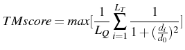
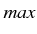
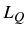
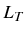
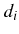

El hecho de que la estructura terciaria está más conservada que la secuencia (ver sección 1.3.5) podemos aprovecharlo para buscar posibles relaciones filogenéticas remotas entre proteínas:
Repasemos algunos algoritmos fundamentales para calcular la similitud estructural entre parejas de proteínas (hay alguno más en la WikipediA):
Puedes ampliar detalles de estos algoritmos en Pascual-García (2014a).

|

|
Hay disponibles muchos otros programas disponibles para la comparación estructural de proteínas, y cada usuario tiene el suyo preferido. A qué se debe esto? La razón es que no existe una definición totalmente satisfactoria del alineamiento estructural correcto, que es en definitiva la función que todos estos algoritmos tratan de optimizar. De hecho, ni siquiera está claro si las taxonomías estructurales clásicas, como CATH o SCOP (Csaba et al., 2009), son compatibles con la evidencia disponible sobre la evolución de los plegamientos ( folds ), que actualmente se imagina como un proceso discreto sólo hasta cierto punto (Taylor, 2002; Sadowski & Taylor, 2010; Pascual-García et al., 2009; Andreeva et al., 2014). De hecho SCOP2 se hizo para superar esas limitaciones. Otra complicación adicional es que algunos plegamientos pueden verse como permutaciones circulares de elementos de estructura secundaria de otros (Schmidt-Goenner et al., 2010).
A pesar de estas dificultades, en general aceptamos que cada superfamilia de proteínas es un clúster de estructuras muy similares, que se pueden superponer aunque su secuencia sea muy diferente, y que cada plegamiento es un subconjunto de superfamilias que comparten una topología de estructura secundaria.
Lo habitual cuando se publica un nuevo método es compararlo con otros preexistentes. Estas comparaciones, si son rigurosas y reproducibles, pueden ayudar en la tarea de seleccionar un programa idóneo para esta tarea. El algoritmo MAMMOTH, con el que vamos a trabajar, se resume en estos pasos, en palabras textuales de sus autores (Ortiz et al., 2002):
1.- From the Calpha trace, compute the unit-vector U-RMS between all pairs of heptapeptides of both model and experimental structure. The U-RMS is described in: Kedem, Chew & Elber (1999) Proteins 37(4):554-64, and in Chew, Huttenlocher, Kedem & Kleinberg (1999) J.Comp.Biol. 6, 313-325. This is a measure sensitive to the local structure.
2.- Use the matrix derived in step 1 to find and alignment of local structures that maximizes the local similarity of both the model and the experimental structure. For that, use a global alignment method with zero end gaps, as described in Needleman & Wunsch (1970) J.Mol.Biol. 48, 443-453.
3.- Find the maximum subset of similar local structures that have their corresponding Calphas close in cartesian space. "Close" is considered here as a distance less or equal than 4.0 A. The method to find this subset is a small variant of the MaxSub algorithm from the Fischer group: Siew, Elofsson, Rychlewski & Fischer (2000) Bioinformatics, in press.
4.- Obtain the probability of obtaining the given proportion of aligned residues (with respect to the shortest protein model) by chance. This metric (E-value) is then used as the final score (or the corresponding Z-score, both are equivalent for gaussian distri- butions, however the Z-score is a more manegable index). In order to obtain this value, an approach similar to that of Levitt & Gerstein (1998) PNAS 95, 5913 is used, as described in Abagyan & Batalov (1997) J.Mol.Biol. 273, 355-368. The E-value estimation is based on extreme-value fitting. In a test set with the SCOP database, it shows rather good performance.
MAMMOTH fue comparado con varios métodos, como se ve en esta figura:

|
MAMMOTH es junto con DALI de los mejores programas, porque además de generar superposiciones y alineamientos satisfactorios, sus medidas numéricas de similitud devuelven valores que se ajustan a la evaluación visual de la superposición obtenida. En concreto, MAMMOTH devuelve para cada alineamiento una puntuación y su valor esperado asociado ( E-value ), que podemos interpretar de manera análoga a los valores esperados de BLAST, superando las limitaciones del RMSD para comparar estructuras que solamente se parecen en algunas regiones (Siew et al., 2000). Además, hay una versión de MAMMOTH que permite calcular alineamientos múltiples.
Para superar las limitaciones del RMSD, que da el mismo peso a regiones del core que a regiones divergentes, Zhang & Skolnick (2004) propusieron otra función, el TM-score, que disminuye el peso de las parejas alineadas a mayor distancia, es menos sensible a la longitud de las estructuras comparadas y toma valores entre 0 y 1:
|  | (5.1) |
Aquí  es el valor máximo obtenido en todas las superposiciones calculadas,
 es la longitud de la estructura Q o query ,
 es el total de residuos alineados a la estructura T o template ,
 es la distancia entre la pareja  de residuos y
de residuos y
 el factor de escala para normalizar por longitud de secuencia.
el factor de escala para normalizar por longitud de secuencia.
Para calcularlo de manera óptima podemos usar su algoritmo TM-align (Zhang & Skolnick, 2005), cuyo código fuente esta disponible en TMalignc.tar.gz. La función TM-score se ha convertido en el estándar para medir el parecido entre estructuras, ya que se acepta que un valor de 0.5 garantiza un plegamiento similar.
De todos modos, hay una gran variedad de software para esta tarea, como se muestra por ejemplo en esta lista de la WikipediA.
Para aprender a hacer alineamientos/superposiciones estructurales, y a interpretarlos, podemos hacer este ejercicio:
maxsub_sup.pdb,maxsub_sup2.pdb,rasmol.tcl)
/home/compu2/algoritmos3D/soft/mammoth-1.0-src)
-script rasmol.tcl) y con PyMOL